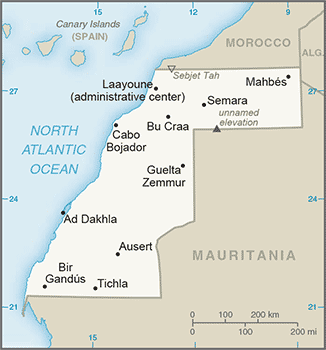
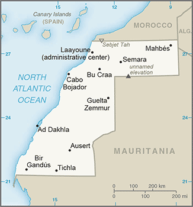

Africa :: WESTERN SAHARA
Introduction :: WESTERN SAHARA
-
Western Sahara is a disputed territory on the northwest coast of Africa bordered by Morocco, Mauritania, and Algeria. After Spain withdrew from its former colony of Spanish Sahara in 1976, Morocco annexed the northern two-thirds of Western Sahara and claimed the rest of the territory in 1979, following Mauritania's withdrawal. A guerrilla war with the Polisario Front contesting Morocco's sovereignty ended in a 1991 cease-fire and the establishment of a UN peacekeeping operation. As part of this effort, the UN sought to offer a choice to the peoples of Western Sahara between independence (favored by the Polisario Front) or integration into Morocco. A proposed referendum never took place due to lack of agreement on voter eligibility. The 2,700 km- (1,700 mi-) long defensive sand berm, built by the Moroccans from 1980 to 1987 and running the length of the territory, continues to separate the opposing forces with Morocco controlling the roughly 80 percent of the territory west of the berm. Local demonstrations criticizing the Moroccan authorities occur regularly, and there are periodic ethnic tensions between the native Sahrawi population and Moroccan immigrants. Morocco maintains a heavy security presence in the territory.
Geography :: WESTERN SAHARA
-
Northern Africa, bordering the North Atlantic Ocean, between Mauritania and Morocco24 30 N, 13 00 WAfricatotal: 266,000 sq kmland: 266,000 sq kmwater: 0 sq kmcountry comparison to the world: 79about the size of Coloradototal: 2,049 kmborder countries (3): Algeria 41 km, Mauritania 1,564 km, Morocco 444 km1,110 kmcontingent upon resolution of sovereignty issuehot, dry desert; rain is rare; cold offshore air currents produce fog and heavy dewmostly low, flat desert with large areas of rocky or sandy surfaces rising to small mountains in south and northeastmean elevation: 256 melevation extremes: lowest point: Sebjet Tah -55 mhighest point: unnamed elevation 805 mphosphates, iron oreagricultural land: 18.8%arable land 0%; permanent crops 0%; permanent pasture 18.8%forest: 2.7%other: 78.5% (2011 est.)0 sq km (2012)most of the population lives in the two-thirds of the area west of the berm (Moroccan-occupied) that divides the territory; about 40% of that populace resides in Laayounehot, dry, dust/sand-laden sirocco wind can occur during winter and spring; widespread harmattan haze exists 60% of time, often severely restricting visibilitysparse water and lack of arable landthe waters off the coast are particularly rich fishing areas
People and Society :: WESTERN SAHARA
-
603,253note: estimate is based on projections by age, sex, fertility, mortality, and migration; fertility and mortality are based on data from neighboring countries (July 2017 est.)country comparison to the world: 169noun: Sahrawi(s), Sahraoui(s)adjective: Sahrawi, Sahrawian, SahraouianArab, BerberStandard Arabic (national), Hassaniya Arabic, Moroccan ArabicMuslimWestern Sahara is a disputed territory; 85% is under Moroccan control. It was inhabited almost entirely by Sahrawi pastoral nomads until the mid-20th century. Their traditional vast migratory ranges, based on following unpredictable rainfall, did not coincide with colonial and later international borders. Since the 1930s, most Sahrawis have been compelled to adopt a sedentary lifestyle and to live in urban settings as a result of fighting, the presence of minefields, job opportunities in the phosphate industry, prolonged drought, the closure of Western Sahara’s border with Mauritania from 1979-2002, and the construction of the defensive berm separating Moroccan- and Polisario-controlled (Sahrawi liberalization movement) areas. Morocco supported rapid urbanization to facilitate surveillance and security.Today more than 80% of Western Sahara’s population lives in urban areas; more than 40% live in the administrative center Laayoune. Moroccan immigration has altered the composition and dramatically increased the size of Western Sahara’s population. Morocco maintains a large military presence in Western Sahara and has encouraged its citizens to settle there, offering bonuses, pay raises, and food subsidies to civil servants and a tax exemption, in order to integrate Western Sahara into the Moroccan Kingdom and, Sahrawis contend, to marginalize the native population.Western Saharan Sahrawis have been migrating to Europe, principally to former colonial ruler Spain, since the 1950s. Many who moved to refugee camps in Tindouf, Algeria, also have migrated to Spain and Italy, usually alternating between living in cities abroad with periods back at the camps. The Polisario claims that the population of the Tindouf camps is about 155,000, but this figure may include thousands of Arabs and Tuaregs from neighboring countries. Because international organizations have been unable to conduct an independent census in Tindouf, the UNHCR bases its aid on a figure of 90,000 refugees. Western Saharan coastal towns emerged as key migration transit points (for reaching Spain’s Canary Islands) in the mid-1990s, when Spain’s and Italy’s tightening of visa restrictions and EU pressure on Morocco and other North African countries to control illegal migration pushed sub-Saharan African migrants to shift their routes to the south.0-14 years: 37.24% (male 113,581/female 111,077)15-24 years: 19.53% (male 59,309/female 58,478)25-54 years: 34.33% (male 102,031/female 105,093)55-64 years: 5.03% (male 14,153/female 16,178)65 years and over: 3.87% (male 10,287/female 13,066) (2017 est.)total dependency ratio: 45youth dependency ratio: 41.4elderly dependency ratio: 3.7potential support ratio: 27.1 (2015 est.)total: 21.3 yearsmale: 20.8 yearsfemale: 21.8 years (2017 est.)country comparison to the world: 1822.7% (2017 est.)country comparison to the world: 1429.3 births/1,000 population (2017 est.)country comparison to the world: 428.1 deaths/1,000 population (2017 est.)country comparison to the world: 89most of the population lives in the two-thirds of the area west of the berm (Moroccan-occupied) that divides the territory; about 40% of that populace resides in Laayouneurban population: 81.1% of total population (2017)rate of urbanization: 2.87% annual rate of change (2015-20 est.)Laayoune 262,000 (2014)at birth: 1.04 male(s)/female0-14 years: 1.02 male(s)/female15-24 years: 1.01 male(s)/female25-54 years: 0.97 male(s)/female55-64 years: 0.87 male(s)/female65 years and over: 0.78 male(s)/femaletotal population: 0.99 male(s)/female (2016 est.)total: 51.9 deaths/1,000 live birthsmale: 56.7 deaths/1,000 live birthsfemale: 46.9 deaths/1,000 live births (2017 est.)country comparison to the world: 27total population: 63.4 yearsmale: 61.1 yearsfemale: 65.8 years (2017 est.)country comparison to the world: 1923.86 children born/woman (2017 est.)country comparison to the world: 40NANANA
Government :: WESTERN SAHARA
-
conventional long form: noneconventional short form: Western Saharaformer: Rio de Oro, Saguia el Hamra, Spanish Saharaetymology: self-descriptive name specifying the territory's western location on the African continent's vast desertlegal status of territory and issue of sovereignty unresolved - territory contested by Morocco and Polisario Front (Popular Front for the Liberation of the Saguia el Hamra and Rio de Oro), which in February 1976 formally proclaimed a government-in-exile of the Sahrawi Arab Democratic Republic (SADR), near Tindouf, Algeria, was led by President Mohamed ABDELAZIZ until his death in May 2016; current President Brahim GHALI elected in July 2016; territory partitioned between Morocco and Mauritania in April 1976 when Spain withdrew, with Morocco acquiring northern two-thirds; Mauritania, under pressure from Polisario guerrillas, abandoned all claims to its portion in August 1979; Morocco moved to occupy that sector shortly thereafter and has since asserted administrative control; the Polisario's government-in-exile was seated as an Organization of African Unity (OAU) member in 1984 - Morocco between 1980 and 1987 built a fortified sand berm delineating the roughly 80 percent of Western Sahara west of the barrier that currently is controlled by Morocco; guerrilla activities continued sporadically until a UN-monitored cease-fire was implemented on 6 September 1991 (Security Council Resolution 690) by the United Nations Mission for the Referendum in Western Sahara (MINURSO)Laayoune (administrative center)time difference: UTC 0 (5 hours ahead of Washington, DC, during Standard Time)daylight saving time: +1hr, begins last Sunday in March; ends last Sunday in Octobernone officially; the territory west of the Moroccan berm falls under de facto Moroccan control; Morocco claims the territory of Western Sahara, the political status of which is considered undetermined by the US Government; portions of the regions Guelmim-Es Smara and Laayoune-Boujdour-Sakia El Hamra, as claimed by Morocco, lie within Western Sahara; Morocco also claims Oued Eddahab-Lagouira, another region that falls entirely within Western Saharanone; (residents of Moroccan-controlled Western Sahara participate in Moroccan elections)nonePolisario FrontAU, CAN (observer), WFTU (NGOs)nonenone
Economy :: WESTERN SAHARA
-
Western Sahara has a small market-based economy whose main industries are fishing, phosphate mining, and pastoral nomadism. The territory's arid desert climate makes sedentary agriculture difficult, and Western Sahara imports much of its food. The Moroccan Government administers Western Sahara's economy and is a key source of employment, infrastructure development, and social spending in the territory.Western Sahara's unresolved legal status makes the exploitation of its natural resources a contentious issue between Morocco and the Polisario. Morocco and the EU in December 2013 finalized a four-year agreement allowing European vessels to fish off the coast of Morocco, including disputed waters off the coast of Western Sahara.Oil has never been found in Western Sahara in commercially significant quantities, but Morocco and the Polisario have quarreled over who has the right to authorize and benefit from oil exploration in the territory. Western Sahara's main long-term economic challenge is the development of a more diverse set of industries capable of providing greater employment and income to the territory. However, following King MOHAMMED VI’s November 2015 visit to Western Sahara, the Government of Morocco announced a series of investments aimed at spurring economic activity in the region, while the General Confederation of Moroccan Enterprises announced a $609 million investment initiative in the region in March 2015.$906.5 million (2007 est.)country comparison to the world: 204$NANA%$2,500 (2007 est.)country comparison to the world: 198agriculture: NA%industry: NA%services: 40% (2007 est.)fruits and vegetables (grown in the few oases); camels, sheep, goats (kept by nomads); fishphosphate mining, handicraftsNA%144,000 (2010 est.)country comparison to the world: 178agriculture: 50%industry and services: 50% (2005 est.)NA%NA%lowest 10%: NA%highest 10%: NA%revenues: $NAexpenditures: $NANA%NA%calendar yearNA%$NAphosphates 62% (2012 est.)$NAfuel for fishing fleet, foodstuffs$NAMoroccan dirhams (MAD) per US dollar -9.7787 (2016)9.7351 (2015)9.7351 (2014 est.)8.3798 (2013 est.)8.6 (2012 est.)
Energy :: WESTERN SAHARA
-
0 kWh (2015 est.)country comparison to the world: 2200 kWh (2015 est.)country comparison to the world: 2190 kWh (2016 est.)country comparison to the world: 2160 kWh (2016 est.)country comparison to the world: 21858,000 kW (2015 est.)country comparison to the world: 189100% of total installed capacity (2015 est.)country comparison to the world: 20% of total installed capacity (2015 est.)country comparison to the world: 2100% of total installed capacity (2015 est.)country comparison to the world: 2140% of total installed capacity (2015 est.)country comparison to the world: 1700 bbl/day (2016 est.)country comparison to the world: 2130 bbl/day (2014 est.)country comparison to the world: 2120 bbl/day (2014 est.)country comparison to the world: 2120 bbl (1 January 2017 es)country comparison to the world: 2130 bbl/day (2014 est.)country comparison to the world: 2141,700 bbl/day (2015 est.)country comparison to the world: 1960 bbl/day (2014 est.)country comparison to the world: 2141,702 bbl/day (2014 est.)country comparison to the world: 1900 cu m (2013 est.)country comparison to the world: 2130 cu m (2013 est.)country comparison to the world: 1480 cu m (2013 est.)country comparison to the world: 2110 cu m (2013 est.)country comparison to the world: 2100 cu m (1 January 2014 es)country comparison to the world: 208300,000 Mt (2013 est.)country comparison to the world: 196
Communications :: WESTERN SAHARA
-
general assessment: sparse and limited systeminternational: country code - 212; tied into Morocco's system by microwave radio relay, tropospheric scatter, and satellite; satellite earth stations - 2 Intelsat (Atlantic Ocean) linked to Rabat, Morocco (2015)Morocco's state-owned broadcaster, Radio-Television Marocaine (RTM), operates a radio service from Laayoune and relays TV service; a Polisario-backed radio station also broadcasts (2008).eh
Transportation :: WESTERN SAHARA
-
6 (2013)country comparison to the world: 174total: 32,438 to 3,047 m: 3 (2013)total: 31,524 to 2,437 m: 1914 to 1,523 m: 1under 914 m: 1 (2013)major seaport(s): Ad Dakhla, Laayoune (El Aaiun)
Transnational Issues :: WESTERN SAHARA
-
many neighboring states reject Moroccan administration of Western Sahara; several states have extended diplomatic relations to the "Sahrawi Arab Democratic Republic" represented by the Polisario Front in exile in Algeria, while others recognize Moroccan sovereignty over Western Sahara; approximately 90,000 Sahrawi refugees continue to be sheltered in camps in Tindouf, Algeria, which has hosted Sahrawi refugees since the 1980s